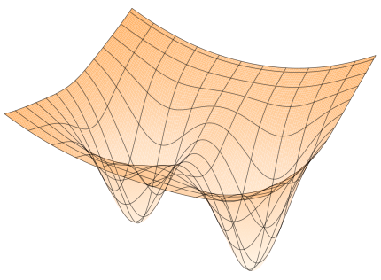

The two main theorems on tree tensor network loss landscapes are formalized and machine-checked in Lean 4 with Mathlib, using an autoformalization workflow.
Abstract
Deep neural networks are expressive enough to contain worst-case targets that can be evaluated in polynomial time but cannot be learned in polynomial time by gradient descent. For practical tasks they nonetheless learn well, raising the question of what non-generic structure of real-world targets enables this. Existing surrogate models cannot pose this question because they either lack hard-to-learn targets entirely (deep linear networks) or cannot evaluate such targets efficiently (kernel methods, infinite-width limits). We study tree tensor networks (TTNs), a model class that generalizes deep linear networks and Tucker decompositions. We show they embed arbitrary read-once Boolean formulas, and thus contain polynomial-size targets that cannot be learned by gradient descent in polynomial time under the same mechanism as neural networks. Despite this, we prove that their loss landscapes are conditionally benign for every realizable target: every local minimum that is minimum-norm is global. Thus, surprisingly, bad local minima are not what distinguishes between typical and worst-case problems in TTNs. Instead, learning difficulty in TTNs can arise from high-order degenerate saddle points, which we show are caused by rank-deficiency. This is explored through a case study of the parity function, illustrating the potential for TTNs to relate landscape geometry to computational hardness.
Problem
Existing surrogate models for deep learning either lack hard-to-learn targets (deep linear networks) or cannot evaluate such targets efficiently (kernel methods, infinite-width limits). This leaves open what structure of real-world targets makes them learnable.
Approach
The authors study tree tensor networks (TTNs), which generalize deep linear networks and Tucker decompositions. They show that TTNs embed read-once Boolean formulas, and so contain targets that gradient descent cannot learn in polynomial time. They prove landscape results using a minimum-norm condition, which they connect to the Kempf–Ness condition and to balancedness. The two main theorems are autoformalized and verified in Lean 4.31.0 with Mathlib.

Figure 1: Top: a deep linear network (DLN) is a chain of tensors; a tree tensor network (TTN) generalizes the DLN to a tree topology (left). Unlike the DLN, the TTN captures nonlinear features and functions which are provably hard-to-learn while retaining a provably benign loss landscape (right). Bottom: our main results, Theorem 5.2 and Theorem 4.3 prove that under some conditions, the only criti
Results
For every realizable target, every minimum-norm local minimum is global, and spurious critical points can occur only at Tucker-rank-deficient points. A case study of the parity function shows that hardness arises from high-order degenerate saddle points rather than from bad local minima.